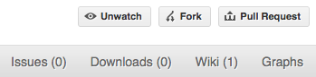

Making your own copy (fork) of nibabel¶
You need to do this only once. The instructions here are very similar to the instructions at https://help.github.com/articles/fork-a-repo/ — please see that page for more detail. We’re repeating some of it here just to give the specifics for the nibabel project, and to suggest some default names.
Set up and configure a github account¶
If you don’t have a github account, go to the github page, and make one.
You then need to configure your account to allow write access — see
the Generating SSH keys help on github help.
Create your own forked copy of nibabel¶
Log into your github account.
Go to the nibabel github home at nibabel github.
Click on the fork button:
Now, after a short pause and some ‘Hardcore forking action’, you should find yourself at the home page for your own forked copy of nibabel.